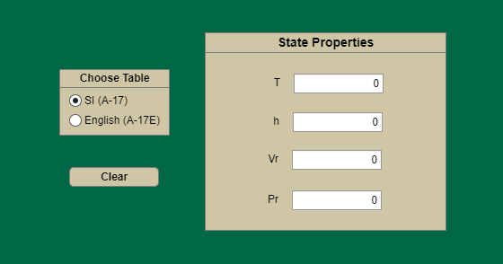

Data selection
Radio buttons route requests to separate SI and English property arrays.
EML 3035 · Spring 2025
A MATLAB App Designer tool that turns tabulated air properties into an interactive, unit-selectable engineering lookup.

The app accepts temperature, enthalpy, relative pressure, or relative specific volume as the independent value.
It selects the SI A-17 or English A-17E air table, finds the two rows bracketing the input, and linearly interpolates all remaining properties. Switching unit systems clears stale values, and invalid ranges trigger a user-facing alert.
Radio buttons route requests to separate SI and English property arrays.
A dedicated search rejects out-of-range inputs and locates adjacent table rows.
A shared linear-interpolation function calculates each dependent property.
Callbacks are temporarily disabled while fields update, preventing recursive events.
| Behavior | Source evidence | Status |
|---|---|---|
| Bidirectional lookup | Any of T, h, Pr, or Vr can act as the independent input. | Implemented |
| Unit selection | Separate 25-row SI and English data sets are selected at runtime. | Implemented |
| Range handling | Inputs outside the table bounds raise an in-app error. | Implemented |
| Automated accuracy tests | No preserved test harness or error comparison was found. | Open |